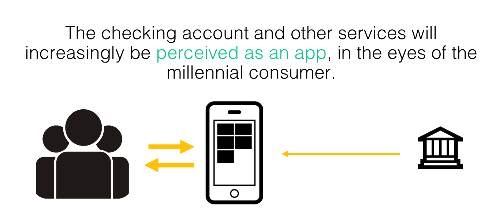
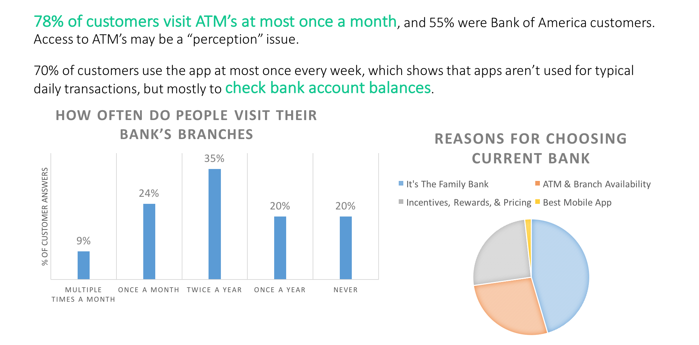
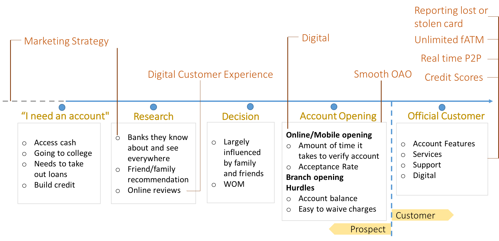
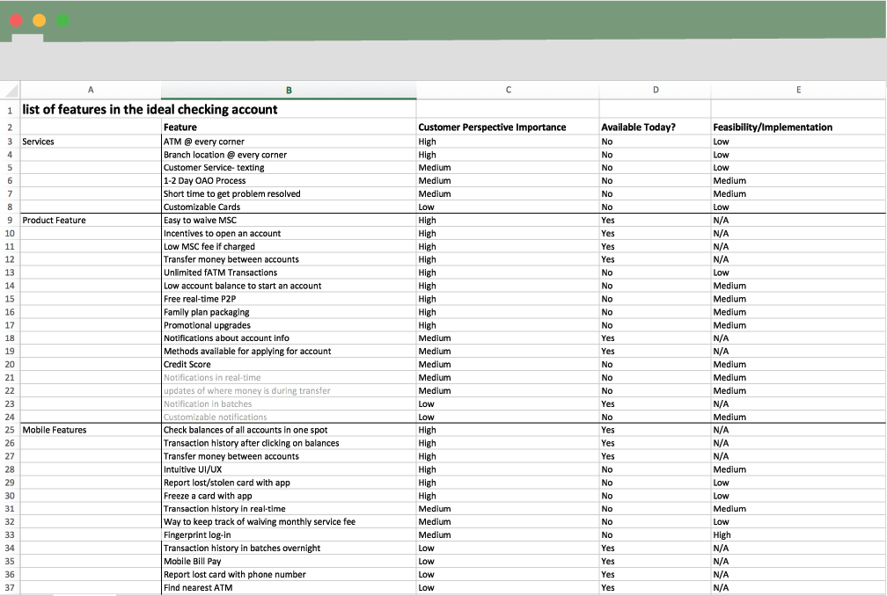
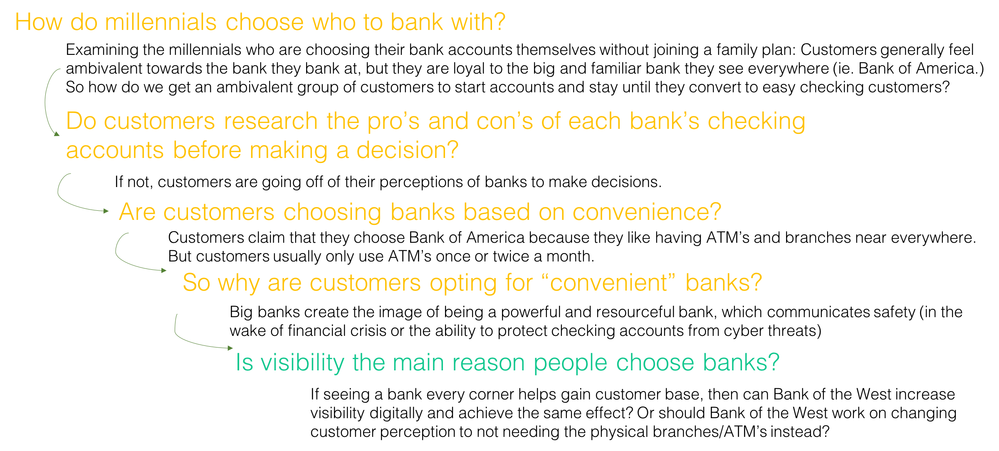
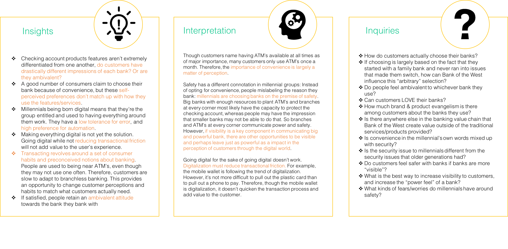
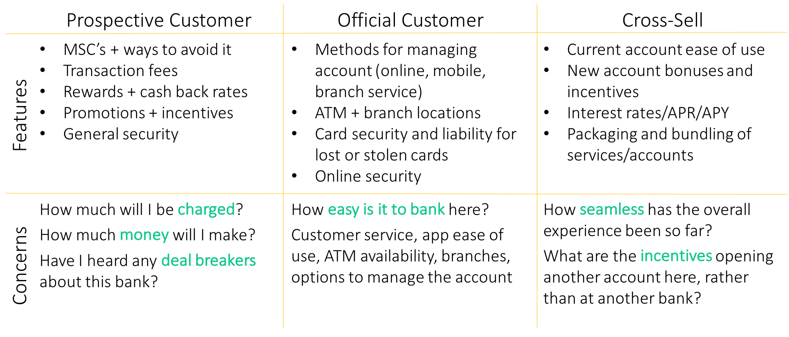

I was a Product Development Intern in Bank of the West’s retail banking group. My job was to brainstorm and research what the ideal checking account might look like for millennials.
My research explored the the importance of mobile banking, what the minimal viable product for this checking account, and the possibilities and challenges in branchless banking.
Attending a Fintech conference, interviewing managers in the bank, and synthesizing competitive analysis, my research explored what was already happening in the retail banking industry. The importance of this research was to consider both the opportunities to take advantage of as well as the strengths of Bank of the West.
I also administered a survey amongst college students to get a better understanding of how some users felt about their relationship with banks and mobile banking.
Focusing on what customers needed, I drafted out customer journey maps and identified opportunities in each existing stage of the customer journey.
The goal of the customer journey was to keep the ideation stage of the checking account as user-centric as possible.
Through surveys, conjoint analysis, and competitive analysis, I evaluated what the minimal viable product might be when looking at a checking account for millennials. The product encompassed services, branch availability, pricing, mobile features, and online features.
Taking into Bank of the West's strengths and the existing trends in mobile banking, I did some research on the prospects of branchless banking.
Findings: Although it won't work because of the perception issue. Though college students seldom visit branches, the presence of branches communicate a secure and powerful bank. Either recreate that perception through other means or
This was the culmination of my research and the coolest part of my experience at Bank of the West! I had the opportunity to lead an interdepartmental brainstorming session of leaders all across the bank to evaluate what the ideal features list would be for millennials.
Segmenting our customers into prospective customers, current customers, and potential cross-sell customers, we identified the concerns that different parts of the bank were hearing from customers and brainstormed features or services to mitigate those concerns. 